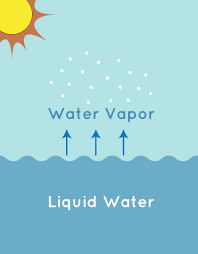

Hi i am salaj
topic is = how clouds maden?
1. Clouds are maden from water vapours.
Now Question Is How Water vapours Maden?
1. Water vapours maden when water get boiled and small water dropleted go to air in the form of water varour.
2. Then this water vapour goes to air and it convete to Clouds.
3. In this way Clouds maden.
We can also under stand in a practical way like this -:
1. see in rivers or seas or in even ponds when sun rays falls into the water for a long time like 3,4 Hours then the water get heat and from that the water vapours came out and they go to air and like this only this process repeats the all water vapours mix and form into Clouds and in this way clouds maden.
